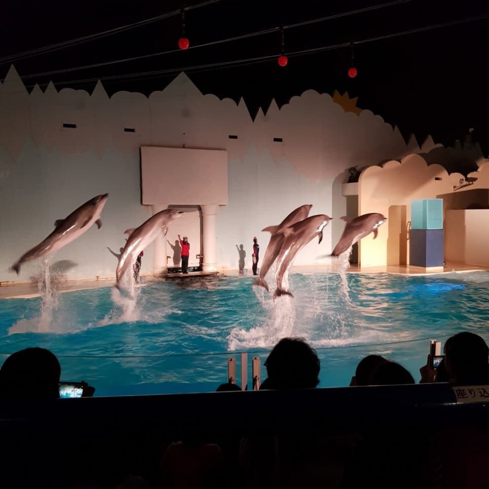
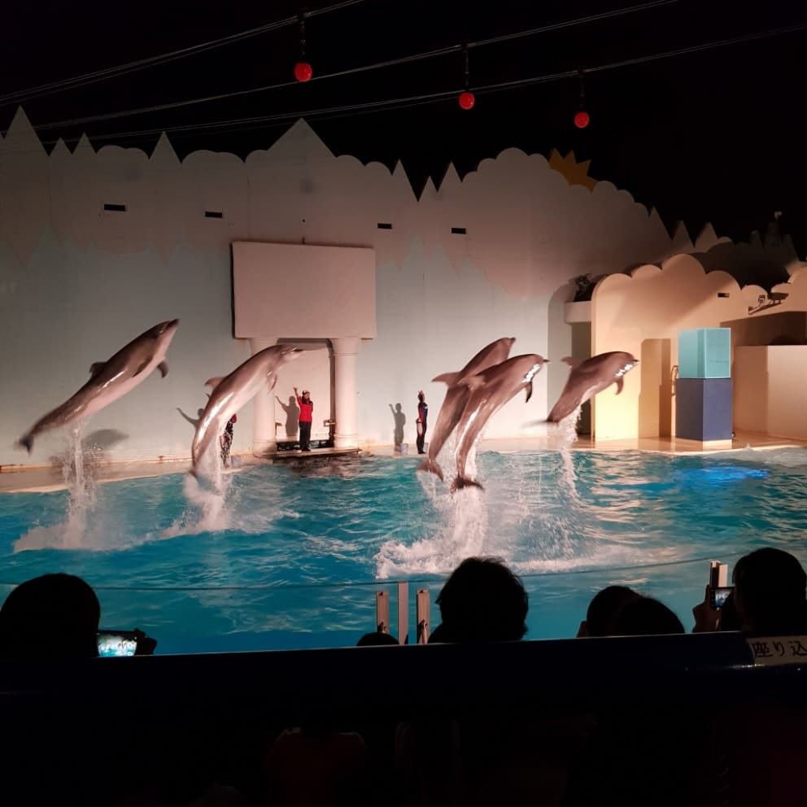
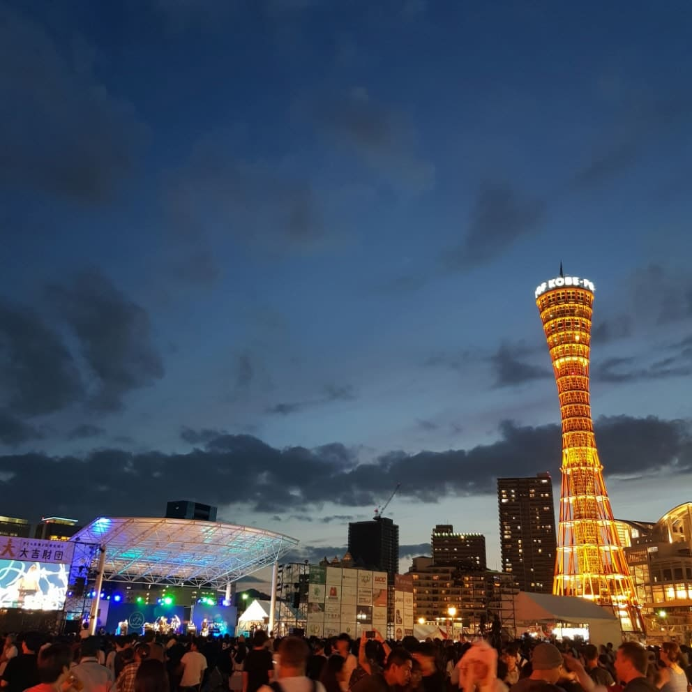
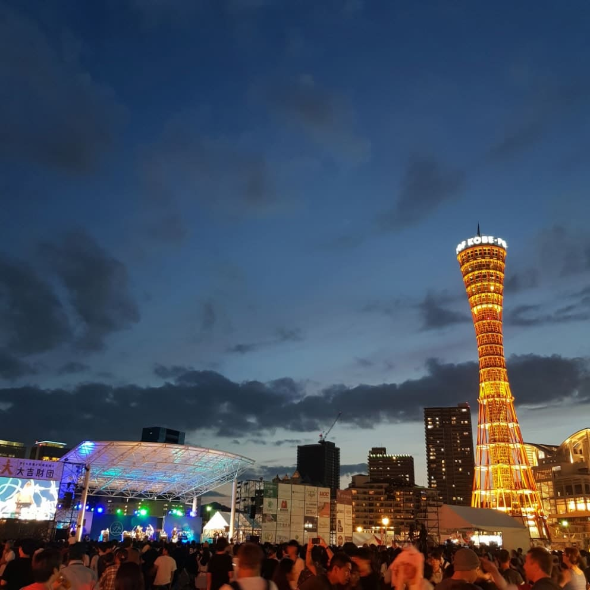

 



해리를 소개한다.
2019년, 해리는 일본의 고베대학교의 교환학생이었다. 일본에서의 학교생활은 해리의 생활에 많은 변화를 주었다.
수업이 많지 않았던 해리는 많은 곳을 여행해보고 싶었다. 그래서 고베에서 가까운 오사카부터 돌아다니기 시작했다.
햅파이브에서 오사카의 경치를 보며 관람차도 타보고,
주말이면 교토에 가서 산책을 즐기기도 했다.
교토의 아라시야마 강은 풍경을 즐기며 폼을 잡기 커피를 마시기 아주 좋은 곳이었다.
맞다 한국인이 응 커피라 부르는 그 커피
해리는 잡화점은 꼭 들리곤 했었다. 왜냐하면 그는 ‘명탐정 코난’의 왕팬이기 때문이다. 대형 잡화점에는 꼭 코난이 있었다.
1쿼터의 종강 이후 해리는 좀 더 멀리까지 가보고 싶었다. 기차를 타고 고라쿠엔 정원도 가보았고,
간사이 지방의 끝이라고도 볼 수 있는 시라하마에서 모래사장도 보고 센조지키에서 폼도 잡아보았다.
2쿼터의 종강이후에도 멀리까지 여행을 다녔다. 특히 돗토리 사구에서 손 선풍기만 들고 사막을 체험했다. 너무 더웠다...
그래도 역시 가장 멋지고 좋았던 곳은 그가 지냈던 고베였다. 벚꽃이 예뻤던 신사, 돌고래쇼가 감동이었던 수족관, 예쁜 동물원, 그리고 멋진 야경까지.
종강 후 있었던 고베 해상 불꽃축제는 잊지 못할 추억이다. 일본에서도 손에 꼽는 하나비마츠리로써 한 시간 동안 약 1만발의 폭죽이 터졌고, 교환학생의 마무리로 더할 나위 없었다.